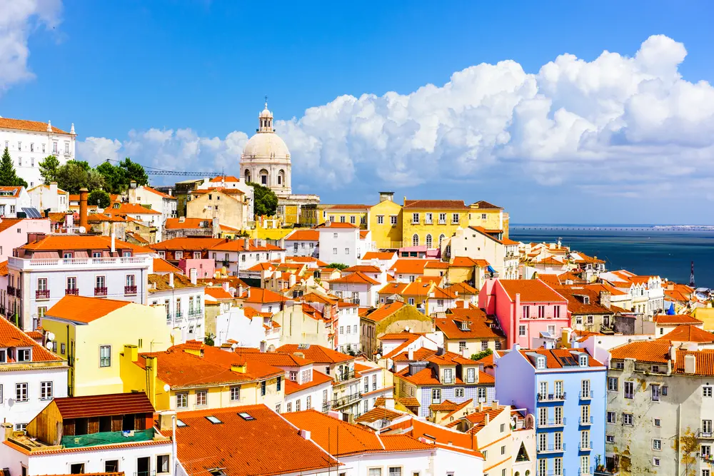

Portugalsko leží na západním pobřeží Pyrenejského poloostrova 🗺️. Hlavním městem je Lisabon 🏙️, město sedmi kopců. Země má dlouhou historii mořeplavby a objevů ⛵. Vasco da Gama byl jedním z nejznámějších objevitelů 🌍. Portugalci jsou hrdí na své portské víno 🍷. Lisabon je známý svými tramvajemi 🚋. Porto dalo jméno slavnému vínu 🍇. Portugalská kuchyně zahrnuje rybí jídla 🐟, zejména tresku. Hudba fado 🎶 má melancholický, ale krásný tón. Portugalsko má mírné klima ☀️ a krásné pláže 🏖️. Patří mu i ostrovy Madeira 🏝️ a Azory 🌋. Lidé jsou přátelští 😊 a klidní. Země se spojuje s dlaždicemi azulejos 🟦. Ekonomika těží z turismu 💶. Portugalsko je jedním z nejstarších států v Evropě 🕰️.
Zpět na Jižní Evropu